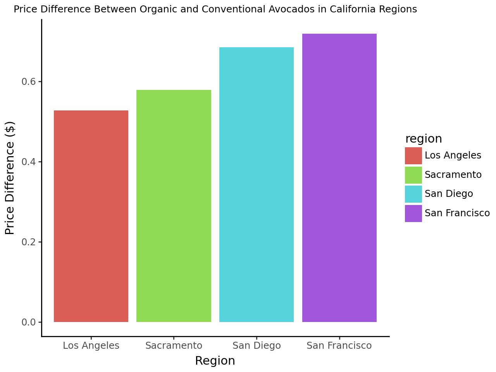

#Dependencies
import pandas as pd
import numpy as np
from plotnine import *Problem 0 - Import the data and declare your package dependencies.
avocados = pd.read_csv('avocado-updated-2020.csv.zip')
print(avocados) date average_price total_volume 4046 ... xlarge_bags type year geography
0 2015-01-04 1.22 40873.28 2819.50 ... 0.00 conventional 2015 Albany
1 2015-01-04 1.79 1373.95 57.42 ... 0.00 organic 2015 Albany
2 2015-01-04 1.00 435021.49 364302.39 ... 0.00 conventional 2015 Atlanta
3 2015-01-04 1.76 3846.69 1500.15 ... 0.00 organic 2015 Atlanta
4 2015-01-04 1.08 788025.06 53987.31 ... 0.00 conventional 2015 Baltimore/Washington
... ... ... ... ... ... ... ... ... ...
33040 2020-11-29 1.47 1583056.27 67544.48 ... 27974.75 organic 2020 Total U.S.
33041 2020-11-29 0.91 5811114.22 1352877.53 ... 61524.13 conventional 2020 West
33042 2020-11-29 1.48 289961.27 13273.75 ... 0.00 organic 2020 West
33043 2020-11-29 0.67 822818.75 234688.01 ... 809.83 conventional 2020 West Tex/New Mexico
33044 2020-11-29 1.35 24106.58 1236.96 ... 0.00 organic 2020 West Tex/New Mexico
[33045 rows x 13 columns]
date average_price total_volume 4046 ... xlarge_bags type year geography
0 2015-01-04 1.22 40873.28 2819.50 ... 0.00 conventional 2015 Albany
1 2015-01-04 1.79 1373.95 57.42 ... 0.00 organic 2015 Albany
2 2015-01-04 1.00 435021.49 364302.39 ... 0.00 conventional 2015 Atlanta
3 2015-01-04 1.76 3846.69 1500.15 ... 0.00 organic 2015 Atlanta
4 2015-01-04 1.08 788025.06 53987.31 ... 0.00 conventional 2015 Baltimore/Washington
... ... ... ... ... ... ... ... ... ...
33040 2020-11-29 1.47 1583056.27 67544.48 ... 27974.75 organic 2020 Total U.S.
33041 2020-11-29 0.91 5811114.22 1352877.53 ... 61524.13 conventional 2020 West
33042 2020-11-29 1.48 289961.27 13273.75 ... 0.00 organic 2020 West
33043 2020-11-29 0.67 822818.75 234688.01 ... 809.83 conventional 2020 West Tex/New Mexico
33044 2020-11-29 1.35 24106.58 1236.96 ... 0.00 organic 2020 West Tex/New Mexico
[33045 rows x 13 columns]Problem 1 - Briefly describe the data set. What information does it contain?
The avocado dataset from Kaggle contains detailed information on avocado prices and sales volume in different parts of the United States from January 4th 2015 to May 17th 2020. This data set includes columns such as the date, average price, total sales of small, large, and extra-large avocadoes, total number of avocado bags sold, the type of avocado, where in the US the data was collected, and the year the data was collected.
Problem 2 - Clean the data in any way you see fit.
#Used ChatGPT to help create a new column for region type
# Create a new column for region type (Major Region, State, Metro Area)
def categorize_region(geography):
if geography in ['Total U.S.', 'West', 'Northeast', 'South', 'Midwest']:
return 'Major Region'
elif geography in ['California', 'Texas', 'Florida', 'New York']:
return 'State'
else:
return 'Metro Area'
avocados['region_type'] = avocados['geography'].apply(categorize_region)
print(avocados) date average_price total_volume 4046 ... type year geography region_type
0 2015-01-04 1.22 40873.28 2819.50 ... conventional 2015 Albany Metro Area
1 2015-01-04 1.79 1373.95 57.42 ... organic 2015 Albany Metro Area
2 2015-01-04 1.00 435021.49 364302.39 ... conventional 2015 Atlanta Metro Area
3 2015-01-04 1.76 3846.69 1500.15 ... organic 2015 Atlanta Metro Area
4 2015-01-04 1.08 788025.06 53987.31 ... conventional 2015 Baltimore/Washington Metro Area
... ... ... ... ... ... ... ... ... ...
33040 2020-11-29 1.47 1583056.27 67544.48 ... organic 2020 Total U.S. Major Region
33041 2020-11-29 0.91 5811114.22 1352877.53 ... conventional 2020 West Major Region
33042 2020-11-29 1.48 289961.27 13273.75 ... organic 2020 West Major Region
33043 2020-11-29 0.67 822818.75 234688.01 ... conventional 2020 West Tex/New Mexico Metro Area
33044 2020-11-29 1.35 24106.58 1236.96 ... organic 2020 West Tex/New Mexico Metro Area
[33045 rows x 14 columns]
date average_price total_volume 4046 ... type year geography region_type
0 2015-01-04 1.22 40873.28 2819.50 ... conventional 2015 Albany Metro Area
1 2015-01-04 1.79 1373.95 57.42 ... organic 2015 Albany Metro Area
2 2015-01-04 1.00 435021.49 364302.39 ... conventional 2015 Atlanta Metro Area
3 2015-01-04 1.76 3846.69 1500.15 ... organic 2015 Atlanta Metro Area
4 2015-01-04 1.08 788025.06 53987.31 ... conventional 2015 Baltimore/Washington Metro Area
... ... ... ... ... ... ... ... ... ...
33040 2020-11-29 1.47 1583056.27 67544.48 ... organic 2020 Total U.S. Major Region
33041 2020-11-29 0.91 5811114.22 1352877.53 ... conventional 2020 West Major Region
33042 2020-11-29 1.48 289961.27 13273.75 ... organic 2020 West Major Region
33043 2020-11-29 0.67 822818.75 234688.01 ... conventional 2020 West Tex/New Mexico Metro Area
33044 2020-11-29 1.35 24106.58 1236.96 ... organic 2020 West Tex/New Mexico Metro Area
[33045 rows x 14 columns]# Renaming columns for clarity
clean_df = avocados.rename(columns={
'4046': 'small_avocados',
'4225': 'large_avocados',
'4770': 'xl_avocados',
'Total Volume': 'total_avocado_volume',
'Total Bags': 'total_bags',
'geography': 'region'
})print(clean_df) date average_price total_volume small_avocados ... type year region region_type
0 2015-01-04 1.22 40873.28 2819.50 ... conventional 2015 Albany Metro Area
1 2015-01-04 1.79 1373.95 57.42 ... organic 2015 Albany Metro Area
2 2015-01-04 1.00 435021.49 364302.39 ... conventional 2015 Atlanta Metro Area
3 2015-01-04 1.76 3846.69 1500.15 ... organic 2015 Atlanta Metro Area
4 2015-01-04 1.08 788025.06 53987.31 ... conventional 2015 Baltimore/Washington Metro Area
... ... ... ... ... ... ... ... ... ...
33040 2020-11-29 1.47 1583056.27 67544.48 ... organic 2020 Total U.S. Major Region
33041 2020-11-29 0.91 5811114.22 1352877.53 ... conventional 2020 West Major Region
33042 2020-11-29 1.48 289961.27 13273.75 ... organic 2020 West Major Region
33043 2020-11-29 0.67 822818.75 234688.01 ... conventional 2020 West Tex/New Mexico Metro Area
33044 2020-11-29 1.35 24106.58 1236.96 ... organic 2020 West Tex/New Mexico Metro Area
[33045 rows x 14 columns]
date average_price total_volume small_avocados ... type year region region_type
0 2015-01-04 1.22 40873.28 2819.50 ... conventional 2015 Albany Metro Area
1 2015-01-04 1.79 1373.95 57.42 ... organic 2015 Albany Metro Area
2 2015-01-04 1.00 435021.49 364302.39 ... conventional 2015 Atlanta Metro Area
3 2015-01-04 1.76 3846.69 1500.15 ... organic 2015 Atlanta Metro Area
4 2015-01-04 1.08 788025.06 53987.31 ... conventional 2015 Baltimore/Washington Metro Area
... ... ... ... ... ... ... ... ... ...
33040 2020-11-29 1.47 1583056.27 67544.48 ... organic 2020 Total U.S. Major Region
33041 2020-11-29 0.91 5811114.22 1352877.53 ... conventional 2020 West Major Region
33042 2020-11-29 1.48 289961.27 13273.75 ... organic 2020 West Major Region
33043 2020-11-29 0.67 822818.75 234688.01 ... conventional 2020 West Tex/New Mexico Metro Area
33044 2020-11-29 1.35 24106.58 1236.96 ... organic 2020 West Tex/New Mexico Metro Area
[33045 rows x 14 columns]Problem 3 - Which major geographical region sold the most total organic, small Hass avocados in 2017?
#Used ChatGPT to help me filter the dataframe and calculate total small avocado sales by region.
# Filter the DataFrame for the year 2017 and organic avocados
df_2017_organic = clean_df[(clean_df['year'] == 2017) & (clean_df['type'] == 'organic')]
# Filter to only include rows where the region is a 'Major Region'
major_regions = ['Total U.S.', 'West', 'Northeast', 'South', 'Midwest']
df_major_regions = df_2017_organic[df_2017_organic['region'].isin(major_regions)]
# Group by region and calculate the total small avocado sales
total_small_avocados_by_region = df_major_regions.groupby('region')['small_avocados'].sum()print(total_small_avocados_by_region)region
Northeast 925832.36
Total U.S. 6882024.42
West 1870206.29
Name: small_avocados, dtype: float64
region
Northeast 925832.36
Total U.S. 6882024.42
West 1870206.29
Name: small_avocados, dtype: float64Total U.S. is the major geographical region that sold the most small avocados in 2017 with a total of 6882024.42 small avocados sold.
Problem 4 - Split the date variable into month, day, and year variables. In which month is the highest average volume of avocado sales?
#Use ChatGPT to convert the date column into three seperate columns for year, month, and day
clean_df['date'] = pd.to_datetime(clean_df['date'], format='%Y-%m-%d')
clean_df['year'] = clean_df['date'].dt.year
clean_df['month'] = clean_df['date'].dt.month
clean_df['day'] = clean_df['date'].dt.day
clean_df| date | average_price | total_volume | small_avocados | large_avocados | xl_avocados | total_bags | small_bags | large_bags | xlarge_bags | type | year | region | region_type | month | day | |
|---|---|---|---|---|---|---|---|---|---|---|---|---|---|---|---|---|
| 0 | 2015-01-04 | 1.22 | 40873.28 | 2819.50 | 28287.42 | 49.90 | 9716.46 | 9186.93 | 529.53 | 0.00 | conventional | 2015 | Albany | Metro Area | 1 | 4 |
| 1 | 2015-01-04 | 1.79 | 1373.95 | 57.42 | 153.88 | 0.00 | 1162.65 | 1162.65 | 0.00 | 0.00 | organic | 2015 | Albany | Metro Area | 1 | 4 |
| 2 | 2015-01-04 | 1.00 | 435021.49 | 364302.39 | 23821.16 | 82.15 | 46815.79 | 16707.15 | 30108.64 | 0.00 | conventional | 2015 | Atlanta | Metro Area | 1 | 4 |
| 3 | 2015-01-04 | 1.76 | 3846.69 | 1500.15 | 938.35 | 0.00 | 1408.19 | 1071.35 | 336.84 | 0.00 | organic | 2015 | Atlanta | Metro Area | 1 | 4 |
| 4 | 2015-01-04 | 1.08 | 788025.06 | 53987.31 | 552906.04 | 39995.03 | 141136.68 | 137146.07 | 3990.61 | 0.00 | conventional | 2015 | Baltimore/Washington | Metro Area | 1 | 4 |
| ... | ... | ... | ... | ... | ... | ... | ... | ... | ... | ... | ... | ... | ... | ... | ... | ... |
| 33040 | 2020-11-29 | 1.47 | 1583056.27 | 67544.48 | 97996.46 | 2617.17 | 1414878.10 | 906711.52 | 480191.83 | 27974.75 | organic | 2020 | Total U.S. | Major Region | 11 | 29 |
| 33041 | 2020-11-29 | 0.91 | 5811114.22 | 1352877.53 | 589061.83 | 19741.90 | 3790665.29 | 2197611.02 | 1531530.14 | 61524.13 | conventional | 2020 | West | Major Region | 11 | 29 |
| 33042 | 2020-11-29 | 1.48 | 289961.27 | 13273.75 | 19341.09 | 636.51 | 256709.92 | 122606.21 | 134103.71 | 0.00 | organic | 2020 | West | Major Region | 11 | 29 |
| 33043 | 2020-11-29 | 0.67 | 822818.75 | 234688.01 | 80205.15 | 10543.63 | 497381.96 | 285764.11 | 210808.02 | 809.83 | conventional | 2020 | West Tex/New Mexico | Metro Area | 11 | 29 |
| 33044 | 2020-11-29 | 1.35 | 24106.58 | 1236.96 | 617.80 | 1564.98 | 20686.84 | 17824.52 | 2862.32 | 0.00 | organic | 2020 | West Tex/New Mexico | Metro Area | 11 | 29 |
33045 rows × 16 columns
#Convert values from scientific notation to standard decimal notation
pd.set_option('display.float_format', '{:.2f}'.format)# Filter the DataFrame for the year 2017 and organic avocados
average_volume_by_month = clean_df.groupby('month')['total_volume'].mean()
max_month = average_volume_by_month.idxmax()
print(average_volume_by_month)
print(max_month)month
1 985312.16
2 1095373.83
3 995715.04
4 1016581.69
5 1123632.25
6 1051246.57
7 983268.10
8 949924.93
9 906477.26
10 844686.29
11 822347.02
12 807669.47
Name: total_volume, dtype: float64
5
month
1 985312.16
2 1095373.83
3 995715.04
4 1016581.69
5 1123632.25
6 1051246.57
7 983268.10
8 949924.93
9 906477.26
10 844686.29
11 822347.02
12 807669.47
Name: total_volume, dtype: float64
5May (month #5) was the month with the highest average volume of avocado sales at 1123632.25
Problem 5 - Which metro area geographical regions sold the most total avocados? Plot side-by-side box-plots of the total volume for only the five metro geographical regions with the highest averages for the total_volume variable.
metro_area = clean_df[clean_df['region_type'] == 'Metro Area']
volume_by_metro_region = metro_area.groupby('region')['total_volume'].sum()
top_five_metro_areas = volume_by_metro_region.nlargest(5).index
top_five_data = metro_area[metro_area['region'].isin(top_five_metro_areas)]
print(top_five_metro_areas)
Index(['South Central', 'Southeast', 'Great Lakes', 'Midsouth', 'Los Angeles'], dtype='object', name='region')
Index(['South Central', 'Southeast', 'Great Lakes', 'Midsouth', 'Los Angeles'], dtype='object', name='region')The South Central region is the region that sold the most amount of total avocados.
#HELP WHY ARE ALL MY BOX PLOTS MESSED UP
#Using plotnine to create side by side box plots
(ggplot(top_five_data,
aes(
x = "region",
y = "total_volume"
))
+ geom_boxplot()
+ labs(title='Box Plots of Total Volume for Top 5 Metro Areas', x='Metro Area', y='Total Volume')
+ facet_wrap('region', ncol=5)
+ theme(axis_text_x=element_text(rotation=45, hjust=1))
)
Problem 6 - From your cleaned data set, create a data set with only these California regions and answer the following questions about these California regions only.
# Define the California regions
california_regions = ['Los Angeles', 'San Diego', 'Sacramento', 'San Francisco']
# Filter the cleaned DataFrame to include only rows from these California regions
california_df = clean_df[clean_df['region'].isin(california_regions)]
# Display the first few rows of the California data to verify the filter worked
print(california_df.head()) date average_price total_volume small_avocados large_avocados ... year region region_type month day
44 2015-01-04 0.85 2682159.95 1837999.65 524430.47 ... 2015 Los Angeles Metro Area 1 4
45 2015-01-04 1.25 54495.54 47721.51 1723.40 ... 2015 Los Angeles Metro Area 1 4
80 2015-01-04 1.05 430138.88 110693.69 270107.61 ... 2015 Sacramento Metro Area 1 4
81 2015-01-04 1.33 9213.49 3727.52 4327.52 ... 2015 Sacramento Metro Area 1 4
82 2015-01-04 0.94 461607.33 244152.26 165299.33 ... 2015 San Diego Metro Area 1 4
[5 rows x 16 columns]
date average_price total_volume small_avocados large_avocados ... year region region_type month day
44 2015-01-04 0.85 2682159.95 1837999.65 524430.47 ... 2015 Los Angeles Metro Area 1 4
45 2015-01-04 1.25 54495.54 47721.51 1723.40 ... 2015 Los Angeles Metro Area 1 4
80 2015-01-04 1.05 430138.88 110693.69 270107.61 ... 2015 Sacramento Metro Area 1 4
81 2015-01-04 1.33 9213.49 3727.52 4327.52 ... 2015 Sacramento Metro Area 1 4
82 2015-01-04 0.94 461607.33 244152.26 165299.33 ... 2015 San Diego Metro Area 1 4
[5 rows x 16 columns]C:\Users\sjacob17\AppData\Local\anaconda3\Lib\pprint.py:632: FutureWarning: Using repr(plot) to draw and show the plot figure is deprecated and will be removed in a future version. Use plot.show().
Problem 7 - In which California regions is the price of organic versus conventional avocados most different? Support your answer with a few summary statistics AND a visualization.
# Group the data by region and type, then calculate the mean price
average_price_by_type = california_df.groupby(['region', 'type'])['average_price'].mean().unstack()
# Display the result to check
print(average_price_by_type)type conventional organic
region
Los Angeles 1.05 1.57
Sacramento 1.30 1.87
San Diego 1.11 1.80
San Francisco 1.40 2.12
type conventional organic
region
Los Angeles 1.05 1.57
Sacramento 1.30 1.87
San Diego 1.11 1.80
San Francisco 1.40 2.12C:\Users\sjacob17\AppData\Local\anaconda3\Lib\pprint.py:632: FutureWarning: Using repr(plot) to draw and show the plot figure is deprecated and will be removed in a future version. Use plot.show().
# Calculate the price difference between organic and conventional avocados
average_price_by_type['price_difference'] = average_price_by_type['organic'] - average_price_by_type['conventional']
# Display the result with the price differences
print(average_price_by_type)type conventional organic price_difference
region
Los Angeles 1.05 1.57 0.53
Sacramento 1.30 1.87 0.58
San Diego 1.11 1.80 0.68
San Francisco 1.40 2.12 0.72
type conventional organic price_difference
region
Los Angeles 1.05 1.57 0.53
Sacramento 1.30 1.87 0.58
San Diego 1.11 1.80 0.68
San Francisco 1.40 2.12 0.72C:\Users\sjacob17\AppData\Local\anaconda3\Lib\pprint.py:632: FutureWarning: Using repr(plot) to draw and show the plot figure is deprecated and will be removed in a future version. Use plot.show().The San Francisco region has the largest price difference between organic and conventional avocados.
(
ggplot(average_price_by_type, aes(x='region', y='price_difference', fill='region'))
+ geom_bar(stat='identity')
+ labs(title='Price Difference Between Organic and Conventional Avocados in California Regions',
x='Region',
y='Price Difference ($)')
+ theme_classic()
+ theme(plot_title=element_text(size=9))
)
C:\Users\sjacob17\AppData\Local\anaconda3\Lib\pprint.py:632: FutureWarning: Using repr(plot) to draw and show the plot figure is deprecated and will be removed in a future version. Use plot.show().
Problem 8 - Recreate the plot, for all four California regions, the proportion of the average Hass avocado sales that are small, large, or extra large; conventional vs. organic.
# Melt the data so 'small_avocados', 'large_avocados', and 'xl_avocados' become a single 'size' column
melted_data = pd.melt(
california_df,
id_vars=['region', 'type'], # Keep region and type columns as is
value_vars=['small_avocados', 'large_avocados', 'xl_avocados'], # Columns to melt
var_name='size', # New column that will indicate the size category
value_name='avocado_volume' # Avoid naming conflict by choosing a different value name
)
# Rename 'small_avocados', 'large_avocados', and 'xl_avocados' to 'Small', 'Large', 'Xlarge'
melted_data['size'] = melted_data['size'].replace({
'small_avocados': 'Small',
'large_avocados': 'Large',
'xl_avocados': 'Xlarge'
})
# Group by region, type (organic/conventional), and size (Small, Large, Xlarge) and calculate the sum of avocado_volume
grouped_data = melted_data.groupby(['region', 'type', 'size'])['avocado_volume'].sum().reset_index()
# Create a dataframe with total volumes for each 'region' and 'type' (conventional/organic)
total_volumes = grouped_data.groupby(['region', 'type'])['avocado_volume'].sum().reset_index()
# Rename the column to avoid confusion
total_volumes.rename(columns={'avocado_volume': 'total_volume_by_region_type'}, inplace=True)
# Merge the total volumes back to the original grouped data to calculate proportions
grouped_data = pd.merge(grouped_data, total_volumes, on=['region', 'type'])
# Calculate the proportion of each size category within each region and type
grouped_data['proportion'] = grouped_data['avocado_volume'] / grouped_data['total_volume_by_region_type']
# Drop the extra column for cleaner output if not needed
grouped_data.drop(columns='total_volume_by_region_type', inplace=True)
# Display the transformed dataset
print(grouped_data.head()) region type size avocado_volume proportion
0 Los Angeles conventional Large 135815746.42 0.26
1 Los Angeles conventional Small 358923415.42 0.68
2 Los Angeles conventional Xlarge 29704534.92 0.06
3 Los Angeles organic Large 6366091.52 0.59
4 Los Angeles organic Small 4419271.78 0.41
region type size avocado_volume proportion
0 Los Angeles conventional Large 135815746.42 0.26
1 Los Angeles conventional Small 358923415.42 0.68
2 Los Angeles conventional Xlarge 29704534.92 0.06
3 Los Angeles organic Large 6366091.52 0.59
4 Los Angeles organic Small 4419271.78 0.41C:\Users\sjacob17\AppData\Local\anaconda3\Lib\pprint.py:632: FutureWarning: Using repr(plot) to draw and show the plot figure is deprecated and will be removed in a future version. Use plot.show().
# Set the order of the 'size' column to Xlarge, Large, Small
size_order = ['Xlarge', 'Large', 'Small']
grouped_data['size'] = pd.Categorical(grouped_data['size'], categories=size_order, ordered=True)
# Define a custom function to format the y-axis as percentages
def percent_formatter(values):
return [f'{v*100:.0f}%' for v in values]
# Create the plot
(
ggplot(grouped_data, aes(x='region', y='proportion', fill='size'))
+ geom_bar(stat='identity', position='stack') # Create stacked bars for each size category
+ facet_wrap('type') # Facet by 'type' (conventional/organic)
+ labs(title='Proportion of Average Hass Avocado Sales by Size', x='Region of California', y='Proportion')
+ theme_classic()
+ theme(axis_text_x=element_text(rotation=45, hjust=1)) # Rotate x-axis labels for readability
+ scale_y_continuous(labels=percent_formatter) # Use the custom function to format y-axis as percentages
)C:\Users\sjacob17\AppData\Local\anaconda3\Lib\pprint.py:632: FutureWarning: Using repr(plot) to draw and show the plot figure is deprecated and will be removed in a future version. Use plot.show().